参数化配置
NutShell 支持参数化配置, 目前经过验证的核心配置集有小核、顺序核、乱序核, 运行环境配置集有仿真, FPGA (支持 pynq 和 axu3cg), 相关配置集已经预设在代码中.

其中, 顺序核是本文档主要针对介绍的, 小核以顺序核为基础进行裁剪；而乱序核部分则是王华强同学的毕业设计内容, 现已融入 NutShell 配置框架中.
在 src/main/scala/top/Settings.scala 中给出了目前支持可配置的各个参数, 截取默认的配置如下所示:
object DefaultSettings {
def apply() = Map(
"MemMapBase" -> 0x0000000000000000L,
"MemMapRegionBits" -> 0,
"MMIOBase" -> 0x0000000040000000L,
"MMIOSize" -> 0x0000000040000000L,
"ResetVector" -> 0x80000000L,
"NrExtIntr" -> 1,
"HasL2cache" -> true,
"HasPrefetch" -> true,
"EnableMultiIssue" -> false,
"EnableSuperScalarExec" -> false,
"EnableOutOfOrderExec" -> false,
"HasDTLB" -> true,
"HasITLB" -> true,
"HasDcache" -> true,
"HasIcache" -> true,
"MmodeOnly" -> false,
"IsRV32" -> false,
"EnableILA" -> true,
"EnableDebug" -> false,
"EnableRVC" -> true,
"EnableCoh" -> true,
"SDIMem" -> false
)
}
在工程的 Makefile 中, 你可以设定环境变量 CORE 和 BOARD 指定生成的处理器使用哪一种预设配置集, 默认为顺序核+仿真环境.
配置集测试情况
顺序核：可运行 AM 应用, Linux Kernel, Debian 等
乱序核：可运行 AM 应用, Linux Kernel 等
小核（32位）：可运行 AM 应用等